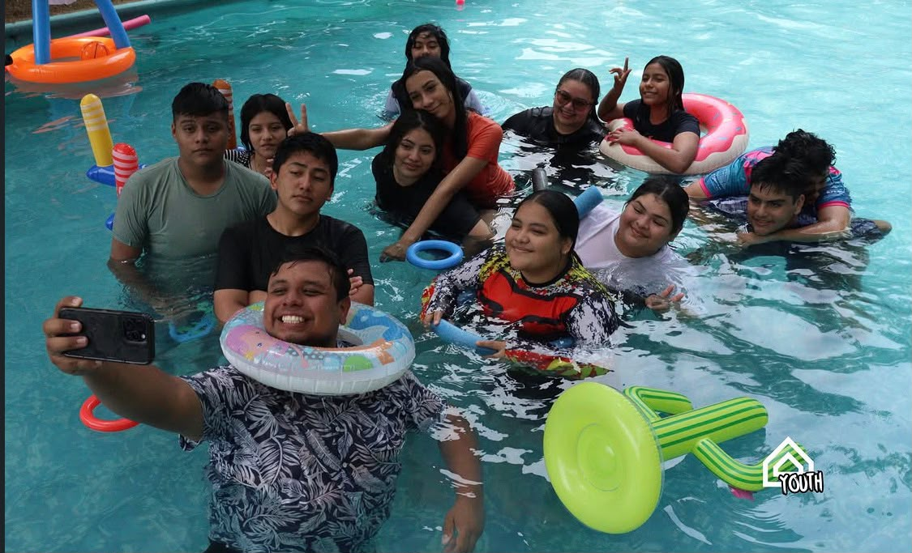
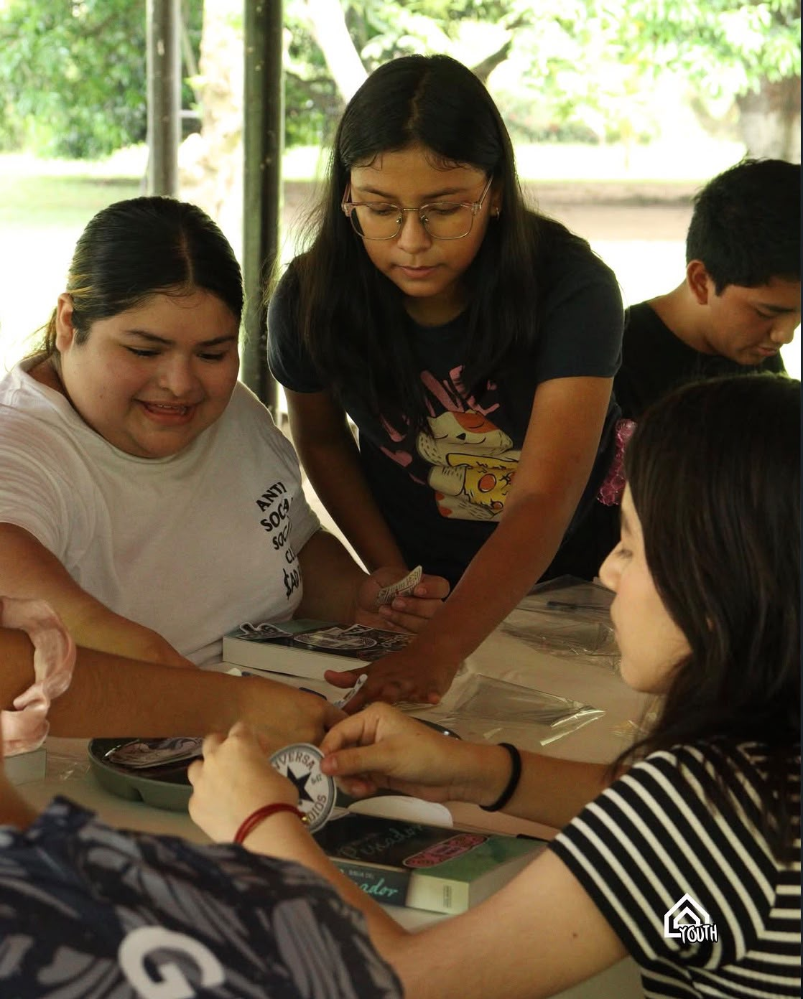
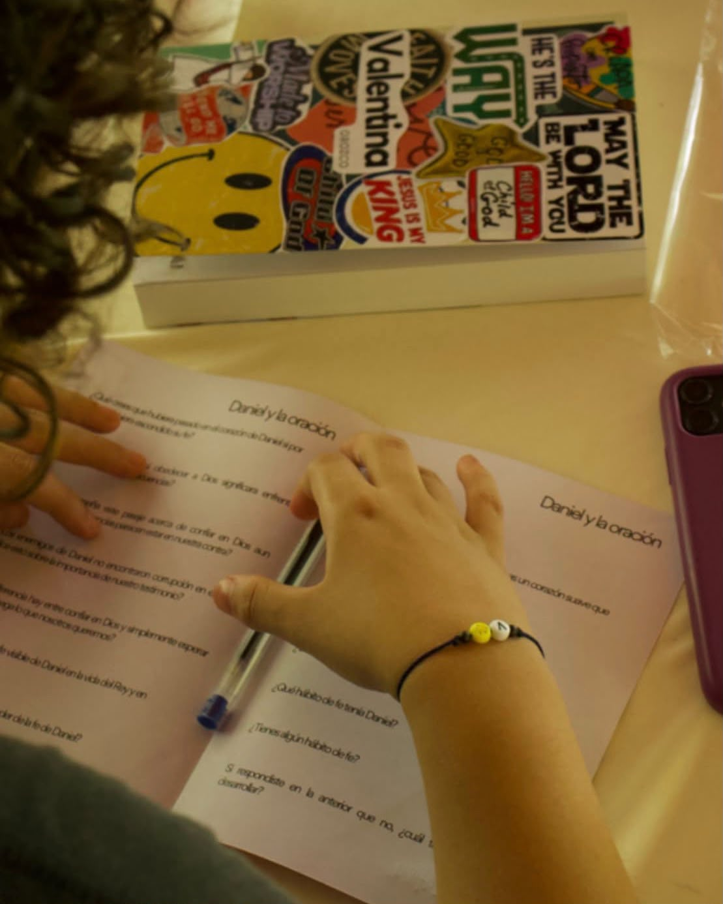
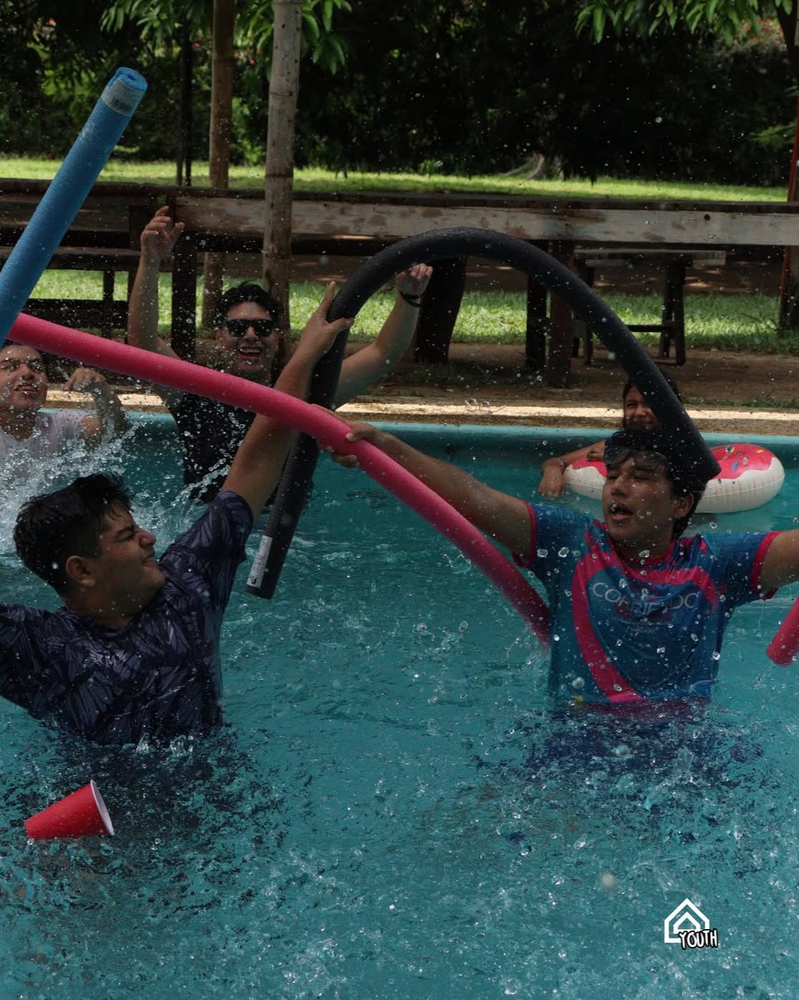
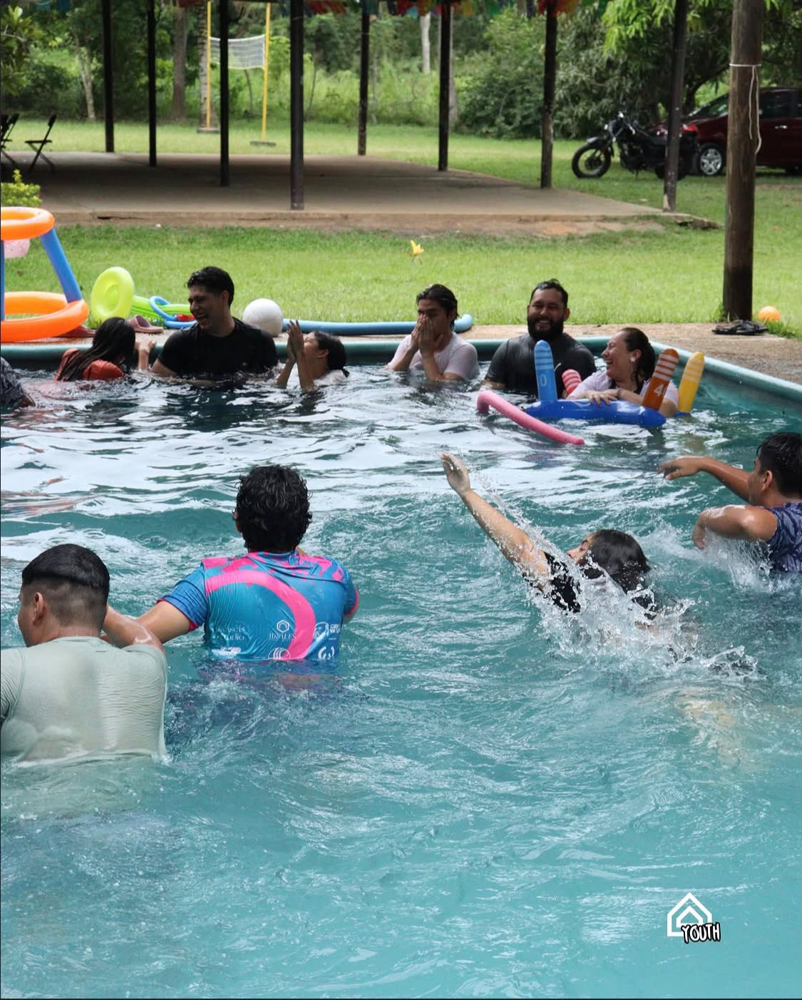
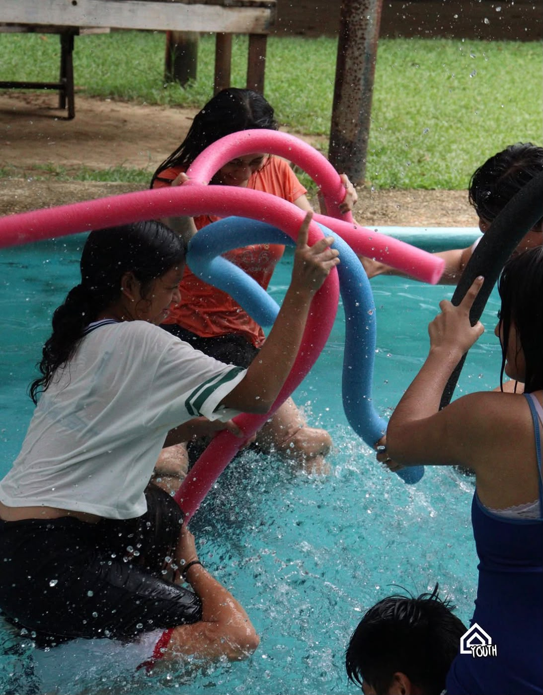
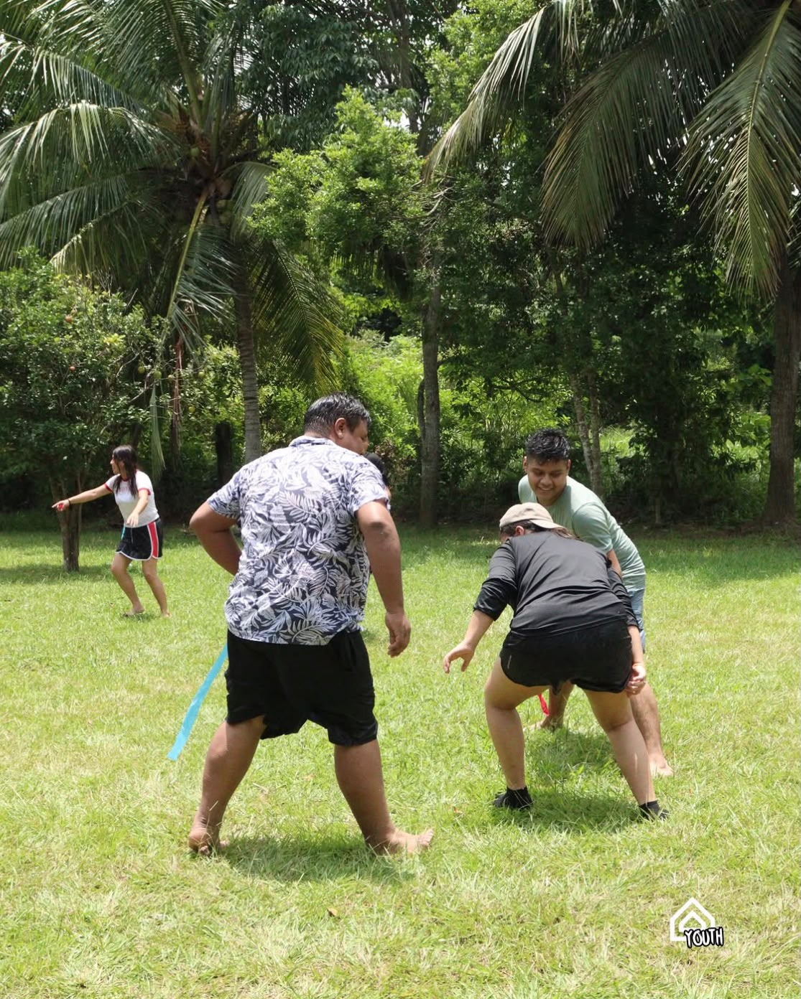
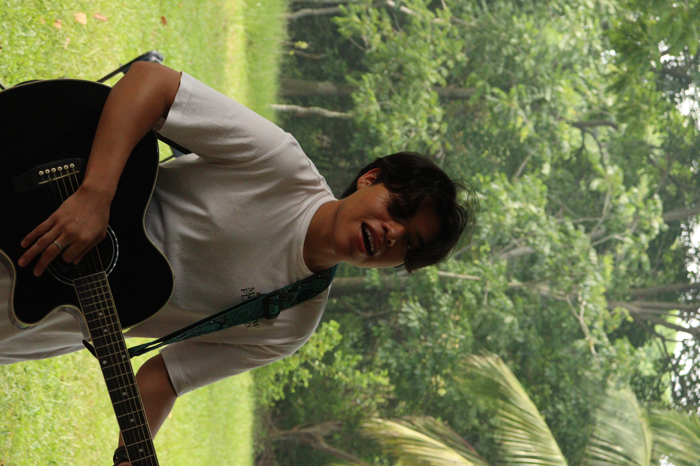

Fe real
Conversaciones y enseñanzas para llevar nuestra fe a la vida cotidiana.
Un espacio para jóvenes que quieren conocer más de Dios, crecer juntos, descubrir su propósito y vivir una fe auténtica.
Conoce el ministerio Quiero participar
Creemos en una juventud que aprende, sirve, crea amistades sanas y pone sus talentos al servicio de Dios y de los demás.
Conversaciones y enseñanzas para llevar nuestra fe a la vida cotidiana.
Descubre tus dones, fortalece tus habilidades y encuentra oportunidades para servir.
Conecta con otros jóvenes y construye relaciones que impulsen tu crecimiento.
Participa, ayuda y usa lo que Dios puso en ti para bendecir a otros.
Un lugar para compartir, aprender, adorar y crear grandes recuerdos.







Queremos formar una generación que conozca a Dios, cuide a los demás y sea una influencia positiva donde estudia, trabaja y convive.
Tiempo para aprender, adorar y compartir.
Actividades para fortalecer amistades y comunidad.
Oportunidades para participar activamente en la iglesia.
Ven, conoce a otros jóvenes y forma parte de Amisadai.
Contáctanos